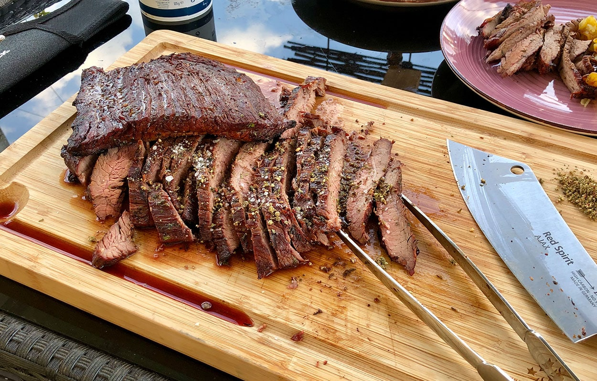

Marinated Flank Steak

Description
Flank steak is a lean cut of beef that comes from the cow's lower abdominal muscles.
It's a relatively tough cut that's low in fat, which means a few things:
Flank steak doesn't need to be trimmed,
it's inexpensive compared to other cuts, and it benefits greatly from marination.
Ingredients
- cup vegetable oil
- 1/3 cup low-sodium soy sauce
- 2 tablespoons fresh lemon juice
- 1 1/2 tablespoons Worcestershire sauce
- 1 tablespoon Dijion mustard
- 2 cloves garlic, minced
- 1/2 teaspoon ground black pepper
Steps
- Gather all ingredients
- Whisk together oil, soy sauce, vinegar, lemon juice, Worcestershire sauce, Dijon mustard, garlic,
and pepper for marinade until thoroughly combined.
Place steak in a 9x13-inch glass baking dish.
- Pour marinade over flank steak in the baking dish; turn several times to coat thoroughly with marinade.
Cover, and refrigerate for 2 to 6 hours, or up to 12 hours if you have time.
- When ready to cook, preheat an outdoor grill for medium-high heat and lightly oil the grate.
- Remove steak from the marinade and shake off excess. Discard the remaining marinade.
- Cook steak on the preheated grill for about 5 minutes per side, or to desired doneness.
- Remove from the grill and let rest for 5 minutes before slicing and serving.
- Serve hot and enjoy!